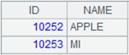
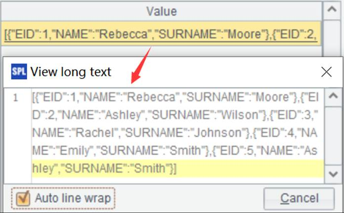

Description:
Select records from a pseudo table according to a specified condition.
Syntax:
|
T.select(x) |
|
Note:
The function calculates expression x on each record of pseudo table T and returns a pseudo table containing records that make x true. It returns a pseudo table retaining all its records when parameter x is absent.
Parameter:
|
T |
A pseudo table |
|
x |
A Boolean expression that is a filter condition, which can be null |
Return value:
A pseudo table object
Example:
|
|
A |
|
|
1 |
=create(file).record(["D:/file/pseudo/app.ctx"]) |
Below is data in composite table app.ctx:  |
|
2 |
=pseudo(A1)
|
Generate a pseudo table object |
|
3 |
=A2.select(eid>7) |
Get records that satisfy eid>7 from A2’s pseudo table and return it
|
|
4 |
=A3.import() |
Get a table sequence from pseudo table object A3  |
|
5 |
=A2.select() |
Return A2’s pseudo table having all its original records |
|
6 |
=A5.import() |
Get a table sequence from pseudo table object A5
|